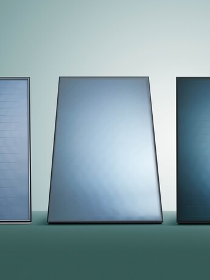
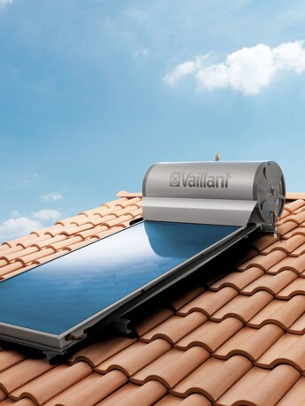
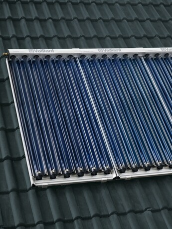

Energji Solare

Kolektor termik diellor me pllaka të sheshta auroTHERM VFK
Efikasitet elegant
- Prodhimi i ujit të ngrohtë diellor, ngrohja e pishinave dhe/ose mbështetja e ngrohjes qendrore. Projektuar gjithashtu për sisteme diellore të mëdha komerciale.
- E përputhshme për instalim në çati, instalim homogjen në çati dhe për montim në distancë në një çati të sheshtë ose zona të tjera
- VFK 145 dhe VFK 155 disponohen në versionet e instalimit horizontal dhe vertikal, VFK 125 për instalim vertikal
- Për fitime nga dielli edhe në ditët me re ose ditë me rrezatim të ulët
- Absorbuesi serpentine alumini-bakër i salduar me lazer siguron transferim optimal të nxehtësisë

auroSTEP pro
Koncept i provuar në dizajn kompakt
- Për furnizim me ujë të ngrohtë shtëpiak
- Vëllimet e rezervuarit 150, 200 dhe 300 litra
- Nuk ka kosto shtesë të energjisë për funksionin e pompës, sistemi mund të shtohet në rezervë elektrike
- Reduktuar kostot e mirëmbajtjes
- Mbrojtja nga korrozioni

Kolektor termik diellor auroTHERM ekskluzive VTK
Përdorimi optimal i energjisë diellore
- Kolektor tubash vakum me 6 ose 12 tuba (1 ose 2 m²)
- Për aplikim në sistem për prodhimin diellor të ujit të ngrohtë shtëpiak, por edhe për sistemet e ngrohjes me mbështetje diellore
- Pesha e ulët dhe dimensionet kompakte
- Instalim i shpejtë dhe i sigurt në çati të pjerrëta ose të sheshta, pranë njëra-tjetrës ose njëra mbi tjetrën
- Tuba të lehtë për t’u zëvendësuar